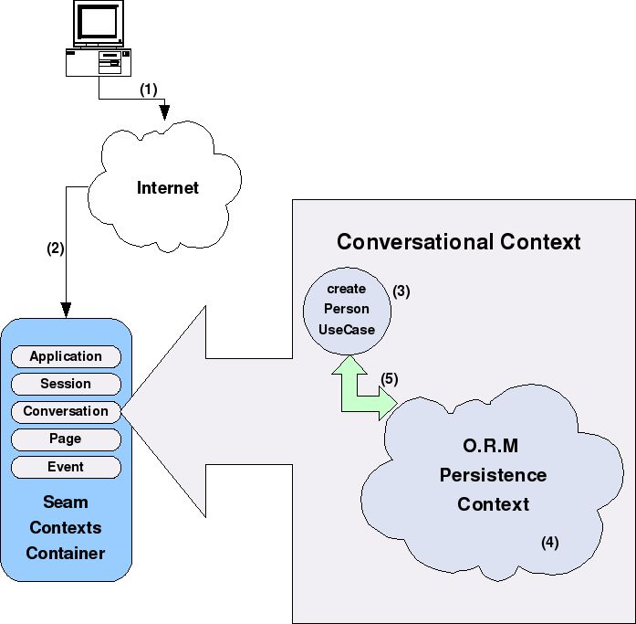
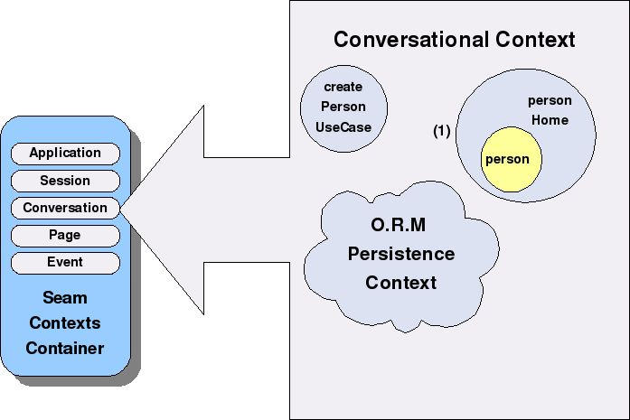
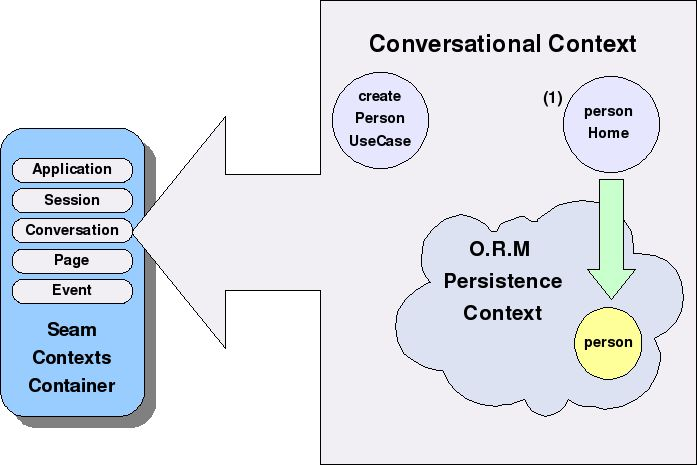
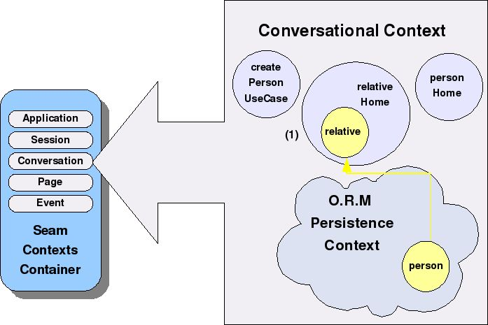
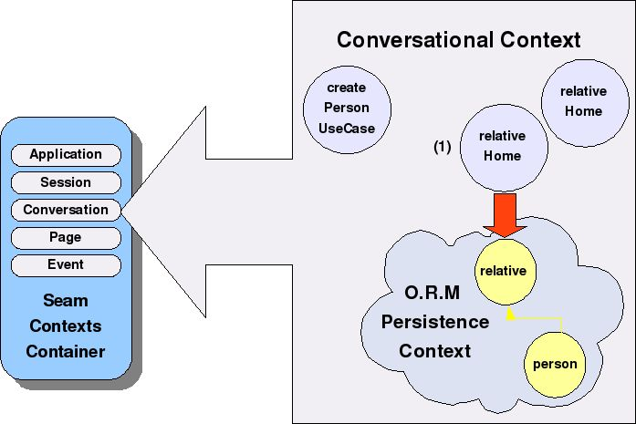
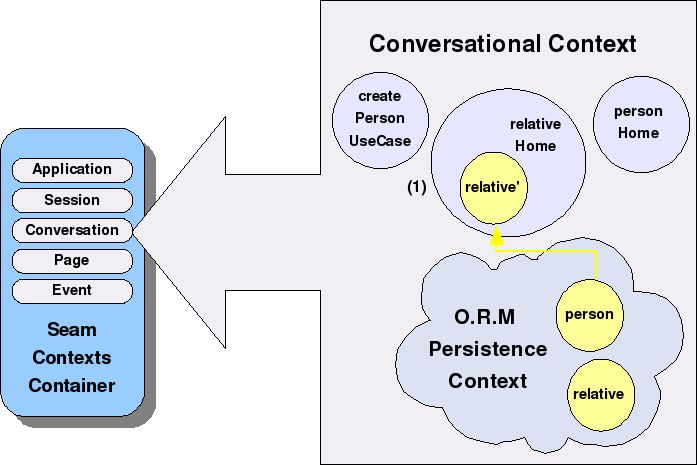
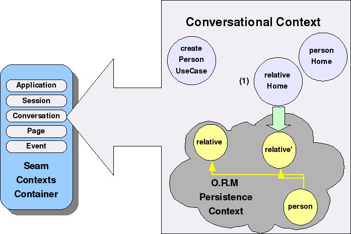
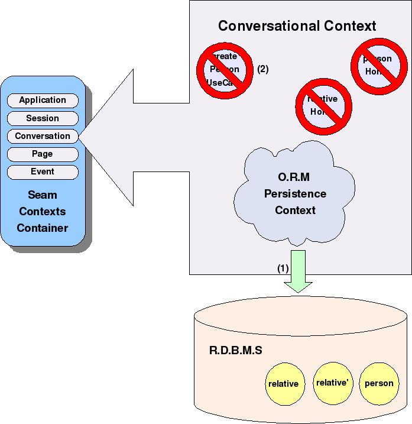

Built with Seam
You can find the full source code for this website in the Seam package in the directory /examples/wiki. It is licensed under the LGPL.

Seam is an application framework that enables the development of truly stateful web applications. In order to do this, the framework provides the following features:
- Transactions that start in one screen and end in another ( a wizard is a typical example of a multi-page use case ).
- Domain objects that get persisted in a persistence context, during the course of the use case, with ORM validators at the method and bean levels. The use case can be confirmed or cancelled in the last page, without having to explicitly delete database records or in-memory objects, and without session memory leaks.
- When browsing between pages, the framework is in charge of restoring previous states, instead of the programmer.
- Lists in drop-downs and combo boxes (to give some examples) get read only once, when either returning from a prevous page or reloading with F5. This is achieved by using Hibernate's first-level cache, which is not well used by stateless frameworks such as Spring.
- Use case tests are really representative of the actual use case, i.e., they use the same transaction management, persistence context, first-level cache, bijection, etc.
Both the official reference books for Seam, as well as those available from third parties, do not focus on how the achieve the above. While the framework does provide transaction and conversation management, the persistence context, etc, the task of hiding these details from the programmer is ours, and therefore that is what we will do next.
So many promises !!In the following article, we will design the classes needed for the management of a single use case, with a model that will make the above problems invisible to the 'end' programmer.
Our goal
The following is the source code for a use case that will create a person, his/her relatives, and their phone numbers. We want to design a 3-page wizard: one for the person, another for the relatives, and a third one for their phone numbers. We will use EL expressions in order to make the code shorter.
invokeMethod("#{createPersonUseCase.beginUseCase}"); (1)
setValue("#{personHome.instance.firstName}", "Anakin");
setValue("#{personHome.instance.lastName}", "Skywalker"); (2)
invokeMethod("#{personHome.persist}"); (3)
setValue("#{relativeHome.instance.firstName}", "Padme");
setValue("#{relativeHome.instance.lastName}", "Amidala");
setValue("#{relativeHome.instance.relation}", "wife"); (4)
invokeMethod("#{relativeHome.persist}"); (5)
invokeMethod("#{relativeHome.instance.clearInstance}");
setValue("#{relativeHome.instance.firstName}", "Luke");
setValue("#{relativeHome.instance.lastName}", "Skywalker");
setValue("#{relativeHome.instance.relation}", "son"); (6)
invokeMethod("#{relativeHome.persist}"); (7)
setValue("#{phoneHome.instance.number}", "555-1111");
invokeMethod("#{phoneHome.persist}"); (8)
invokeMethod("#{phoneHome.clearInstance}");
setValue("#{phoneHome.instance.number}", "555-1234");
invokeMethod("#{phoneHome.persist}"); (9)
invokeMethod("#{createPersonUseCase.finishUseCase}"); (10)
The joys of Seam
Like it can be seen in the previous code snippet, there are no explicit references to transactions, contexts, conversations, persistence, etc. Everything is hidden from the developer. Here is the step-by-step detail of the tasks done by Seam in the example code:
- The component createPersonUseCase gets instantiated, Seam starts a long conversation, a transaction starts in the persistence context of an ORM supporting FlushMode MANUAL, and the method beginUseCase() gets called. Control is now given to the developer, who can perform a custom initialization of the use case if he so wishes.
- An EntityHome called personHome is created. This home object creates a domain object ( Person ), which is returned by the method getInstance(), in order to be initialized with the example first and last names.
- The home object personHome persists the instance of the domain object ( Person ), though not in the database, but in the ORM's persistence context instead ( since the transaction was started by the persistence context and not by the RDBMS )
- An EntityHome called relativeHome is instantiated. This home object creates a domain object ( Relative ). Internally during its creation, this home gets the personHome object via injection from Seam's context ( or more precisely, Seam's metacontainer ).
- The home object relativeHome persists the instance of the domain object ( Relative ). The transaction is still ongoing...
- Object relativeHome gets reused, but first there is a call to method clearInstance(), in order to tell a new instance of Relative must be created. Again, the home object receives an instance of the Person object to be assigned to the Relative.
- The new Relative gets persisted in the ORM's persistence context.
- The home object phoneHome is created, which in turn it persists the Phone domain object.
- Again, we clear the instance in phoneHome with clearInstance() and repeat the step for the other Phone.
- The database transaction starts and ends, dumping in it all the domain objects kept in the ORM's persistence context. Then all the EntityHome objects in the current conversation are deleted from memory, and finally the conversation itself is deleted.
Detail of step (1)

- Use Case start request.
- A new Conversational Context is linked to the Use Case.
- New instance of object createPersonUseCase, within the Conversational Context.
- Creation of the ORM's Persistence Context.
- A new Transaction, linked to the ORM's Persistence Context, is started from object createPersonUseCase.
Detail of step (2)

- Creation of an object personHome of type EntityHome, which will instantiate a domain object called person. Both will be kept in the Conversational Context.
Detail of step (3)

- Object personHome persists the domain object person in the ORM's Persistence Context
Detail of step (4)

- A new instance of type EntityHome called relativeHome is created. This home contains the domain object relative, in transient state. The relative object gets created with a reference to person, already in the ORM's Persistence Context
Detail of step (5)

- Object relativeHome persists its domain object relative in the ORM's Persistence Context. The transaction has not been persisted by the RDBMS yet.
Detail of step (6)

- Object relativeHome is reused, but first the method clearInstance() is called to indicate a new instance of type Relative (also called relative in this example) must be created. Again, the instance person is received and assigned to the new relative.
Detail of step (7)

- The new relative is persisted in the ORM's Persistence Context. As the diagram shows, the relationships between domain objects are preserved.
Detail of step (10)

- The database transaction is started and ended by the RDBMS, persisting all domain objects kept in the ORM's Persistence Context.
- All objects in the Conversational Context ( createPersonUseCase, relativeHome, personHome, and the Persistence Context of the ORM ) get deleted, and finally the Conversational Context itself is deleted.
The icing on the cake
With the architecture already defined, we will now show the source code for the classes used in the previous example. We will start with the class for component createPersonUseCase:
package com.test.seam.usecases;
@Name("abstractCreatePersonUseCase")
@Scope(ScopeType.CONVERSATION)
@Conversational
public class CreatePersonUseCase extends UseCase implements Serializable {
private static final long serialVersionUID = 8270494158481079247L;
}
The functionality to create and end the transaction, the conversation, etc, is encapsulated in the UseCase superclass. Therefore, if the use case does not require special start and end requirements, it is complete.
So far, the actual code the developer needs to write is minimal. Let's continue with the Home objects, starting with personHome:
package com.test.homes;
@Name("personHome")
@Scope(ScopeType.CONVERSATION)
@Conversational
public class PersonHome extends EntityHome<Person> implements Serializable {
private static final long serialVersionUID = -505760018509003694L;
}
Done! The persistence functionality is implemented in the superclass provided by Seam. We specify <Person> in order to indicate the type of domain object wrapped by the Home. Let's proceed with the class for relativeHome:
package com.test.homes;
@Name("relativeHome")
@Scope(ScopeType.CONVERSATION)
@Conversational
public class RelativeHome extends EntityHome<Relative> implements Serializable {
private static final long serialVersionUID = -505760018509003694L;
@In
PersonHome personHome;
/* (non-Javadoc)
* @see org.jboss.seam.framework.Home#createInstance()
*/
protected Relative createInstance() {
Relative relative=new Relative();
relative.setPerson(personHome.getInstance());
return relative;
}
}
As we can see, the personHome is injected into this EntityHome, and is then used to obtain and assign the person instance during the creation of the domain object relative. No further coding is necessary.
The code for phoneHome is identical to the above example, except changing the word relative for phone.
Since class CreatePersonUseCase is conversational, it requires an existing long conversation in order to be instantiated by Seam's metacontainer. We define a factory tasked with the instantiation and ejection of the conversation, using the UseCaseManager.
package com.test.seam.usecases;
@Name("createPersonUseCaseFactory")
public class CreatePersonUseCaseFactory implements Serializable {
@Factory(value="createPersonUseCase",scope=ScopeType.CONVERSATION)
public CreatePersonUseCase getCreatePersonUseCase() {
return new UseCaseManager<CreatePersonUseCase>().createUseCase(CreatePersonUseCase.class);
}
}
As can be seen, the factory ejects component createPersonUseCase into the metacontainer.
That's it. Our hypothetical programmer does not need to write any additional code in order to have a complete use case (with the exception, of course, of coding the domain objects Person, Relative and Phone, which are all very simple).
Beyond the Matrix...
How did we manage to hide the functionality needed for the use case to work? The following is the code for the UseCaseManager, which should never be seen by our programmer:
package com.test.seam.usecases;
public class UseCaseManager<E extends UseCase> implements Serializable {
private static final long serialVersionUID = -4291304878869343425L;
public E createUseCase(Class<E> useCase) {
Conversation.instance().begin();
Conversation.instance().changeFlushMode(FlushModeType.MANUAL);
E e=(E)Component.getInstance(useCase,true);
return e;
}
}
Method createUseCase is in charge of creating the conversation, telling the corresponding ORM that the FlushMode will be MANUAL, and instantiating the Seam component ( in our case, CreatePersonUseCase ).
Finally, here is our object UseCase as the icing on the cake:
package com.test.seam.usecases;
public abstract class UseCase implements Serializable {
private EntityManager entityManager;
public String beginUseCase() {
entityManager= (EntityManager) Component.getInstance("entityManager");
return Constants.SUCCESS;
}
public String finishUseCase() {
entityManager.flush();
Conversation.instance().end();
return Constants.SUCCESS;
}
public String cancelUseCase() {
entityManager.clear();
Conversation.instance().end();
return Constants.SUCCESS;
}
}
The only caveat of this class is that we must access the ORM's EntityManager in order to confirm the end of the transaction, either by sending the persistence context to the database with flush() or by cleaning it with clear(), and then marking the end of the conversation so that all the EntityHomes and UseCases are deleted.
Created: 20. Jun 2009, 22:24 America/New_York (Maximiliano Carrizo)
Last Modified: 20. Jun 2009, 23:58 America/New_York (Maximiliano Carrizo)